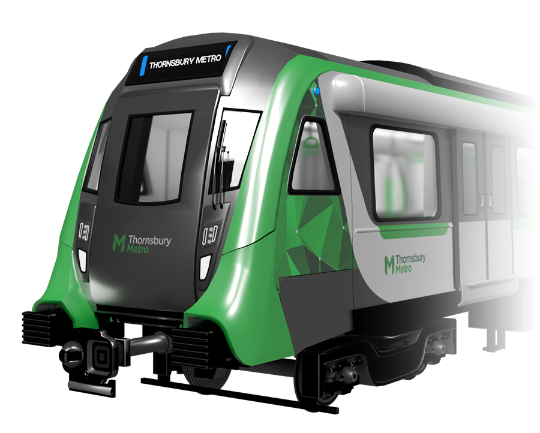
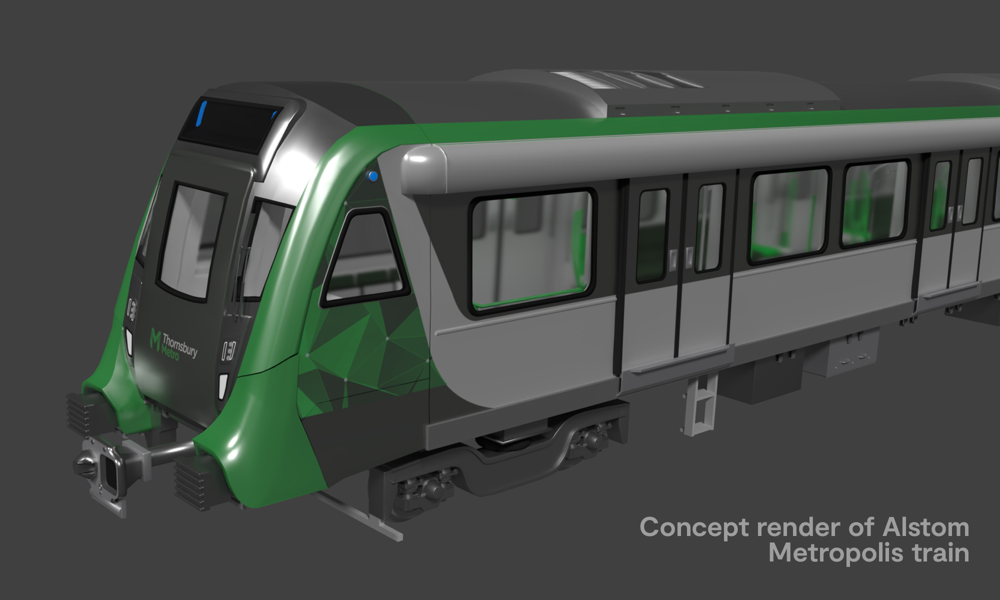
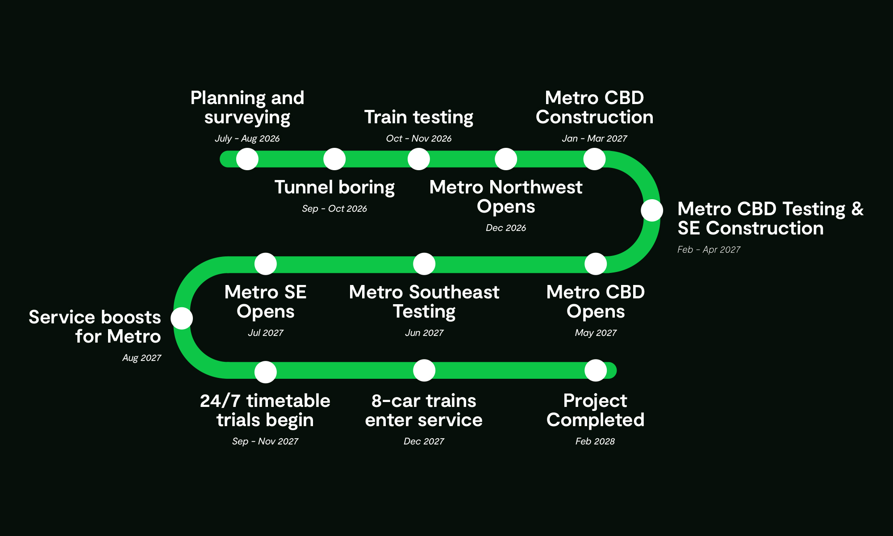
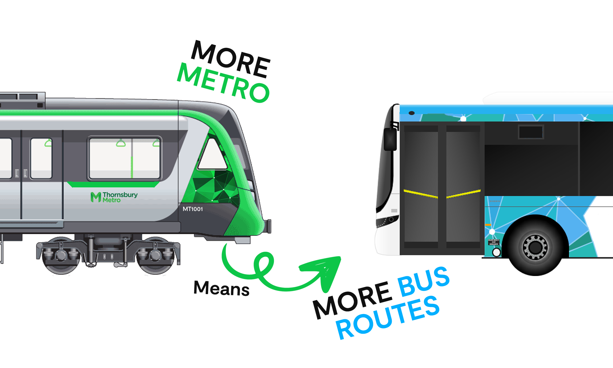

Scroll down for more info ↓


We're building 35 new Alstom Metropolis trains for the new Metro line, with the first train to enter service before December on the Northwest, set to open in September. These new trains will hold a capacity of ~1200 passengers in a six-car form, with a potential expansion to eight cars.
We're working on making this project work between 2026, 2027 & 2028. Open the image in a new tab to see the timeline.


When the Metro is built, we'll also improve the bus network by adding new bus routes, connecting existing ones with the new metro and working on improving timetables for bus services. These improvements will go alongside the opening on all Metro extensions (Metro Northwest, CBD & Southeast)
Starting from St. Belwyn, the line will stop at Avandale, Prylor Hill, Kookaburra Creek, Warrendayle & Fremantle.
When the line opens, trains will operate from 7am - 9pm weekdays only while Metro CBD works take place. Buses will also operate alongside the line, in full 24/7 operation.
Continues from Wundanong, goes onto Thornsbury, Arywn Place & Eastbank.
Trains will operate in this section once testing on the Metro Southeast begins
Goes past Eastbank, extends to new stations and suburbs.
With a new sidings to be built at the terminus of the line, this is the last part of the project.